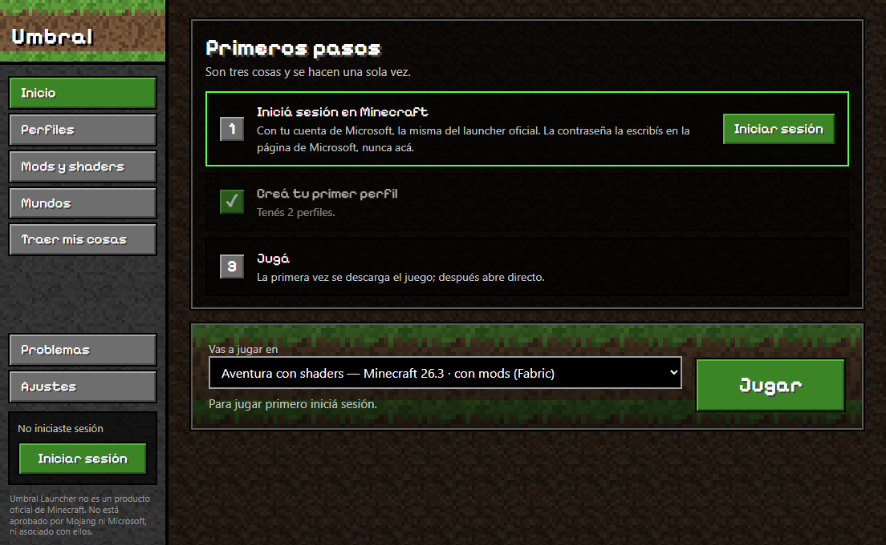
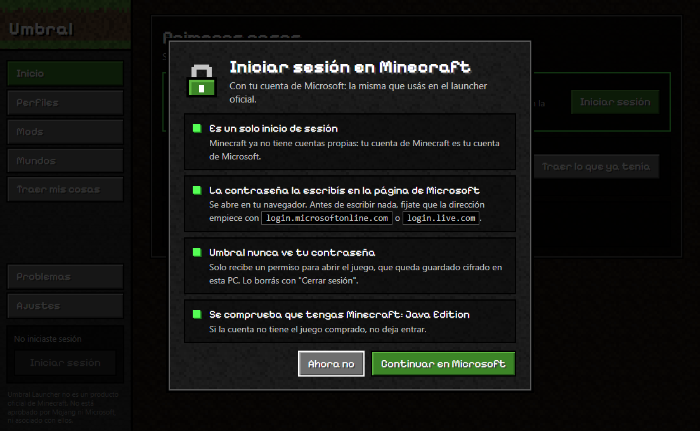
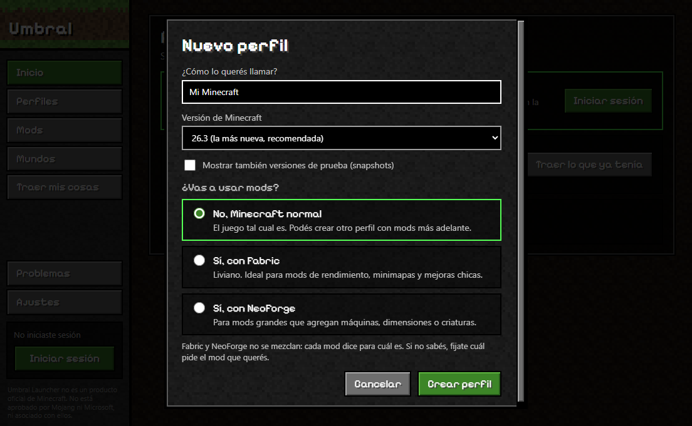

Umbral Launcher is an independent, non-commercial hobby project. You need to own Minecraft: Java Edition to play. The launcher does not include or redistribute any game files: they are downloaded from Mojang's official servers.
Umbral Launcher es un proyecto personal, independiente y sin fines comerciales. Para jugar necesitás tener comprado Minecraft: Java Edition. El launcher no incluye ni redistribuye archivos del juego: se descargan de los servidores oficiales de Mojang.
How to install
Cómo instalarlo
- Download
UmbralLauncher-Setup.exewith the button above and open it. - Windows may show "Windows protected your PC". That happens because the installer is not digitally signed, which costs money every year. Click More info and then Run anyway.
- Follow the installer. It creates an Umbral Launcher shortcut on your desktop.
- Open it, sign in with the Microsoft account that owns Minecraft: Java Edition, create a profile and press Play. The first launch downloads the game, so it takes a few minutes.
- Descargá
UmbralLauncher-Setup.execon el botón de arriba y abrilo. - Puede aparecer "Windows protegió su PC". Pasa porque el instalador no tiene firma digital, que cuesta dinero todos los años. Tocá Más información y después Ejecutar de todas formas.
- Seguí los pasos del instalador. Te deja un acceso directo Umbral Launcher en el escritorio.
- Abrilo, iniciá sesión con la cuenta de Microsoft que tiene Minecraft: Java Edition, creá un perfil y tocá Jugar. La primera vez descarga el juego, así que tarda unos minutos.
To update, download the new version and install it over the old one: profiles, worlds and mods are kept. The launcher tells you when there is a new version.
Para actualizar, bajá la versión nueva e instalala encima: se conservan los perfiles, mundos y mods. El launcher te avisa cuando hay una versión nueva.
What it does
Qué hace
Separate profiles
Perfiles separados
Each profile has its own Minecraft version, mods and worlds, so a modded game never breaks a vanilla one.
Cada perfil tiene su versión de Minecraft, sus mods y sus mundos, para que un juego con mods no rompa el normal.
Everything installs itself
Todo se instala solo
Downloads the game, the right Java version, and Fabric or NeoForge when a profile uses mods.
Descarga el juego, la versión correcta de Java, y Fabric o NeoForge cuando el perfil usa mods.
Mods, shaders and textures
Mods, shaders y texturas
From Modrinth, filtered to what works with the profile. Dependencies are installed too, and Iris comes with the first shader.
Desde Modrinth, filtrados para que funcionen con el perfil. Las dependencias se instalan solas, e Iris viene con el primer shader.
Automatic world backups
Copias automáticas de mundos
Worlds you played are backed up when the game closes. Restoring never overwrites the current world.
Al cerrar el juego se guarda una copia de los mundos jugados. Restaurar nunca pisa el mundo actual.
Bring your existing game
Traé lo que ya tenías
Copies worlds, mods and options from the official launcher or Prism into a new profile, leaving the originals untouched.
Copia mundos, mods y opciones del launcher oficial o de Prism a un perfil nuevo, sin tocar los originales.
Plain-language crash help
Errores explicados
When the game crashes, known causes such as a missing dependency are explained and can be fixed in one click.
Si el juego se cierra, las causas conocidas (como un mod que falta) se explican y se arreglan con un clic.
How sign-in works
Cómo funciona el inicio de sesión
- Sign-in uses the standard Microsoft OAuth 2.0 authorization code flow with PKCE, in your own web browser.
- Your password is typed on Microsoft's page only. The launcher never sees it.
- The launcher checks that the account owns Minecraft: Java Edition before allowing play. There is no offline or cracked mode.
- The session token is stored encrypted on your computer using the operating system's protected storage, and is removed when you sign out.
- No account data is sent anywhere other than Microsoft, Xbox Live and Minecraft Services.
- El inicio de sesión usa el flujo estándar de Microsoft (OAuth 2.0 con código de autorización y PKCE), en tu propio navegador.
- La contraseña se escribe únicamente en la página de Microsoft. El launcher nunca la ve.
- El launcher comprueba que la cuenta tenga Minecraft: Java Edition antes de dejar jugar. No hay modo sin conexión ni modo pirata.
- El permiso de sesión se guarda cifrado en tu computadora con el almacenamiento protegido del sistema, y se borra al cerrar sesión.
- Los datos de la cuenta no se envían a ningún lugar que no sea Microsoft, Xbox Live y Minecraft Services.
Screenshots
Capturas
The interface is currently in Spanish. The blocky look uses the project's own textures and an open-licensed font; no Mojang assets are used.
El estilo de bloques usa texturas propias del proyecto y una tipografía de licencia abierta; no se usan recursos de Mojang.



How it is built
Cómo está hecho
Umbral Launcher is built with Electron and TypeScript, and uses the MIT-licensed @xmcl libraries to install and start the game. Mods are fetched through the public Modrinth API.
Umbral Launcher está hecho con Electron y TypeScript, y usa las librerías @xmcl (licencia MIT) para instalar e iniciar el juego. Los mods se obtienen a través de la API pública de Modrinth.